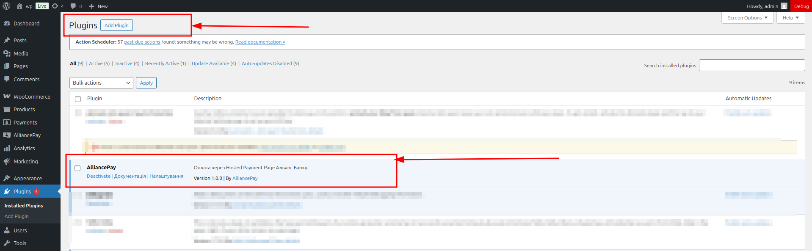
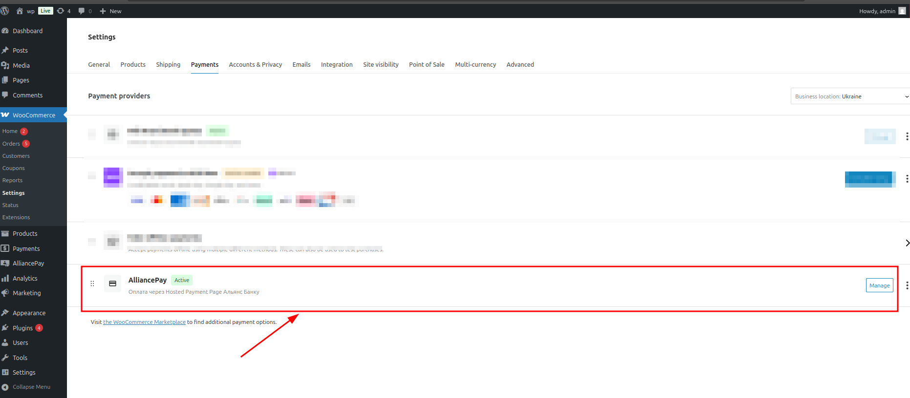
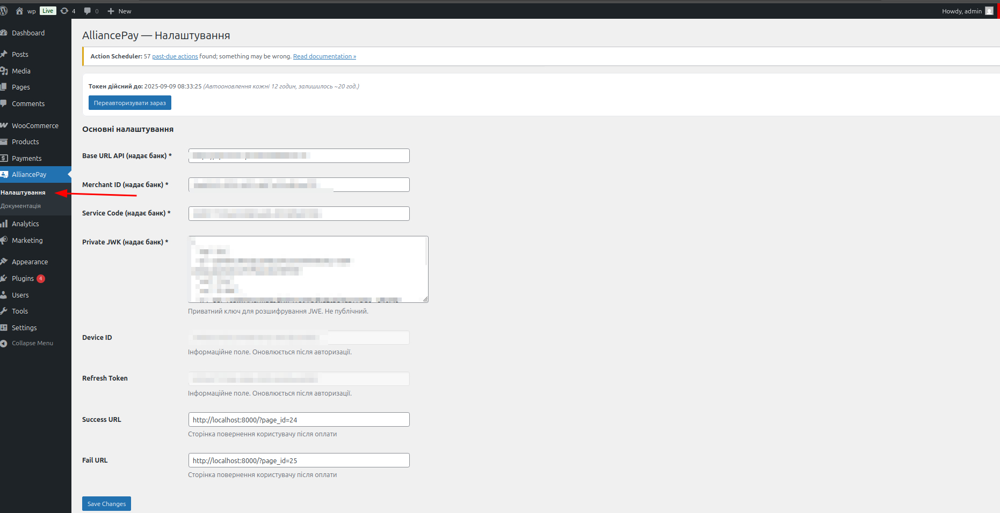

Облікові дані: Merchant ID, Service Code, Private JWK (для отримання необхідно звернутись в АТ “БАНК АЛЬЯНС”).
Коректний часовий пояс сайту: Європа/Київ (для відображення tokenExpiration).
2. Встановлення
Завантажте архів плагіна й встановіть через Плагіни → Додати новий → Завантажити плагін.
Активуйте плагін.
У меню Адмін‑панелі з’явиться пункт AlliancePay
Потім перейдіть в налаштування Woocommerce і активуйте плагін. (скрін 2) woocommerce->settings->payments
На сторінці оплати повинен бути шорткод [woocommerce_checkout]

Скрін 1: сторінка втановлення плагіна (приклад).

Скрін 2: Woocommerce налаштування.
3. Налаштування та авторизація
3.1. Початкові налаштування
Перейдіть до AlliancePay → Налаштування і заповніть всі поля. Зверніть уагу, що деякі поля надаються банком.
Обов'язково, всі поля повинні бути заповнені, щоб платіжний плагін працював правильно
Поля Device ID та Refresh Token відображаються як довідкові (read‑only) — вони зберігаються після успішної авторизації пристрою.

Скрін 3: сторінка налаштувать плагіна.
3.2. Авторизація пристрою
Натисніть Переавторизувати зараз
Після успіху з’явиться Токен дійсний до: — дата/час дії токена.
Важливо. Токен дійсний 24 години; автоматичне поновлення виконується кожні ~12 годин. Ви також можете натиснути Переавторизувати зараз, щоб оновити токен вручну.
3.3. Часовий пояс і точність часу
Переконайтеся, що у Налаштування → Загальні → Часовий пояс вибрано Київ. У плагіні дата tokenExpiration парситься та показується у локальному часі сайту.
4. Усунення неполадок (FAQ)
Токен «злітає» після збереження налаштувань
Переконайтеся, що опція сторінки додана до списку дозволених параметрів (settings API) і що користувач має права адміністратора.
Невірний час у «Токен дійсний до»
Перевірте часовий пояс сайту. У логах можна вивести «tokenExpiration» з шлюзу банку та порівняти з фактичним часом.
Переавторизація
За умовами банку, токен діє 24 години; автооновлення виконується орієнтовно кожні 12 годин. Кнопка Переавторизувати зараз оновлює токен вручну.
Помилки у консолі (404) для лог‑файлів
Якщо логів ще немає — плагін не показує помилку на сторінці, але у DevTools може бути 404 для запиту. Це не критично; файл зʼявиться після першого запису.
Не відображається на чекауті метод оплати
На сторінці оплати обов'язково повинен бути шорт код [woocommerce_checkout]